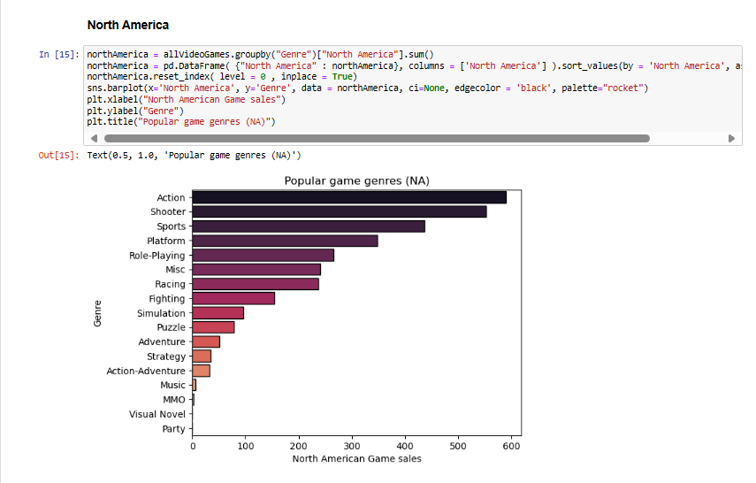

Video Game Patterns is a project which uses python for exploratory
data analysis. It analyzes video game data from three datasets, with the three being ps4 games, xbox games,
and other gaming consoles. This measures qualitative and quantitative data within the three datasets and
finds out how certain factors impact the types of games people play.
Two important factors that help judge the genre people play include the type of video game console as well as the country the sales are from.
In addition to that, the study also analyzes what consoles are the most popular and what the most important year of gaming is.
Tools Learned/Used:


Some screenshots from the project
- 